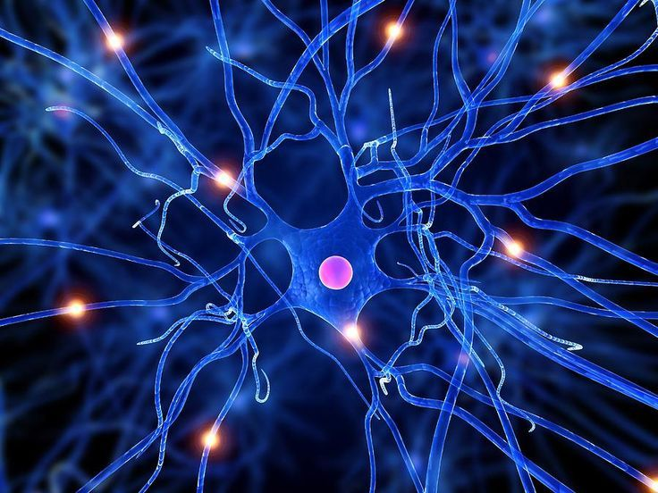
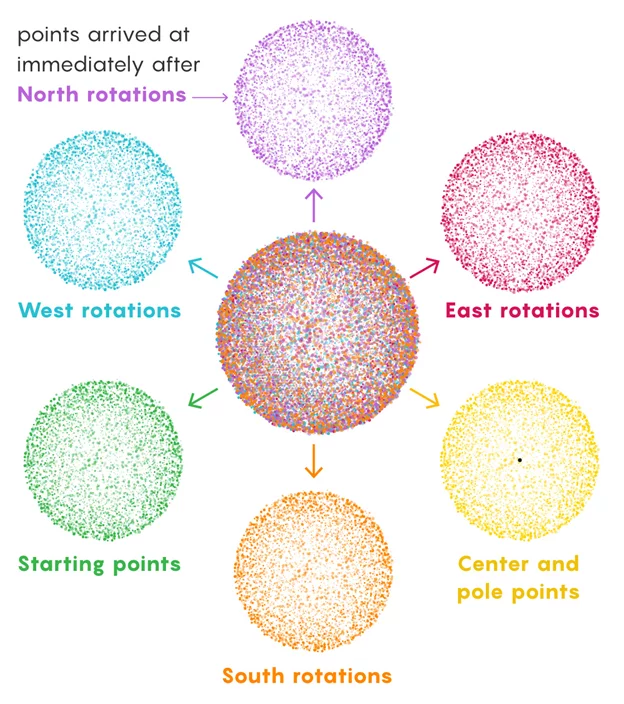
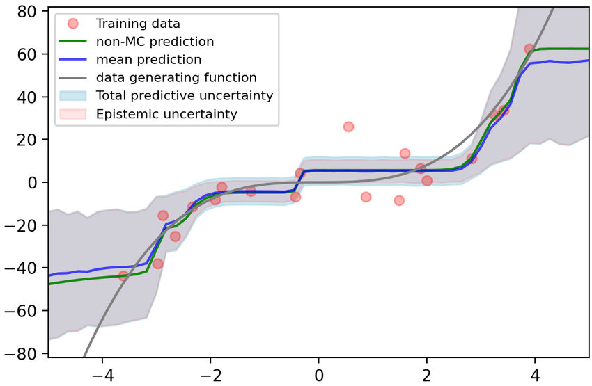

About me
Hello! I’m a Master’s student in Machine Learning at the University of Tübingen, supported by an ELIZA Research-Oriented Master’s Scholarship. My research interests are in representation learning, trustworthy AI, and NeuroAI.
My current work includes causal interventions in vision-language models for studying neural representations at EPFL’s NeuroAI Lab, and self-supervised audio-visual representation learning at Tübingen with Professor Hilde Kuehne and Edson Araujo. Other work includes FairSSL, developed with Professor Sinan Kalkan, Dr. Jiaee Cheong, and Cambridge AFAR, on fair multimodal self-supervised learning for neurological data.
News
-
Aug 2026
I started my research internship at EPFL's NeuroAI Lab.
-
Jul 2026
I attended ICML 2026 in Seoul, South Korea.
-
Apr 2026
My shared first-author paper, FairSSL: Fair Multimodal Self-Supervised Learning, was accepted to ICML 2026.
-
Jan 2026
I was awarded a Summer@EPFL fellowship to join the NeuroAI Lab at EPFL.
-
Oct 2025
I started my M.Sc. studies in Machine Learning at the University of Tübingen.
-
Sep 2025
I was awarded ELIZA's Research-Oriented Master's Scholarship, fully funding my Master's studies at the University of Tübingen.
-
Jul 2025
I graduated from Middle East Technical University with a major in Statistics and minor in Mathematics, ranked 2/140 among graduating Statistics students.
-
Aug 2024
I received METU's 100% international students' tuition fee payment scholarship for the third time for my senior year.
Notes and Slides
-

Manipulation of MR Neurological Data [notes]
fMRI statistical analysis section is incomplete
-

Genetics GWAS Data Preprocessing [notes]
-

Banch-Tarski Paradox and Non-Measurable Sets [slides]
-
Multi-Agent Medical Shared-Decision Making [slides]
-

MCDropot and VI based Gaussian Processes [slides]